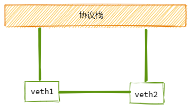
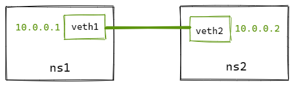

veth（Virtual Ethernet Device）
veth 设备是虚拟以太网设备。
- 可以充当namespace之间的隧道
- 可以作为独立的网络设备
veth设备总是创建为一对互联的设备。一端连着协议栈，一端彼此相连着。

其中一台设备发送的报文，另一台设备会立即接收到。当任意一台设备状态为down时，对端链路状态也为down。
如何创建 veth-pair
ip link add <p1-name> type veth peer name <p2-name>
实验
直接相连是最简单的方式，如下图，一对veth-pair直接将两个namespace连接。

# 创建netns
ip netns add ns1
ip netns add ns2
# 创建veth-pair
ip link add veth1 type veth peer name veth2
# 将veth移动到netns中
ip link set veth1 netns ns1
ip link set veth2 netns ns2
# 给veth配置IP并启用
ip netns exec ns1 ip addr add 10.0.0.1/24 dev veth1
ip netns exec ns1 ip link set veth1 up
ip netns exec ns2 ip addr add 10.0.0.2/24 dev veth2
ip netns exec ns2 ip link set veth2 up
# 从 veth1 ping veth2
ip netns exec ns1 ping 10.0.0.2
# 可以看到被netns隔离的veth pair是能够正常通信的
PING 10.0.0.2 (10.0.0.2) 56(84) bytes of data.
64 bytes from 10.0.0.2: icmp_seq=1 ttl=64 time=0.056 ms
64 bytes from 10.0.0.2: icmp_seq=2 ttl=64 time=0.053 ms
源码实现
内核里面veth源码在drivers/net/veth.c
数据结构如下：
struct veth_priv {
struct net_device __rcu *peer; // 指向另外一端的设备
atomic64_t dropped;
struct bpf_prog *_xdp_prog;
struct veth_rq *rq;
unsigned int requested_headroom;
};
创建 veth-pair
使用ip命令创建veth-pair时，会调用veth_newlink来完成创建工作：
static int __rtnl_newlink(struct sk_buff *skb, struct nlmsghdr *nlh,
struct nlattr **attr, struct netlink_ext_ack *extack)
{
...
// 创建本端设备
dev = rtnl_create_link(link_net ? : dest_net, ifname,
name_assign_type, ops, tb, extack);
...
if (ops->newlink)
err = ops->newlink(link_net ? : net, dev, tb, data, extack);
...
}
static int veth_newlink(struct net *src_net, struct net_device *dev,
struct nlattr *tb[], struct nlattr *data[],
struct netlink_ext_ack *extack)
{
// 创建对端设备
peer = rtnl_create_link(net, ifname, name_assign_type,
&veth_link_ops, tbp, extack);
...
// 设置dev的对端为peer
priv = netdev_priv(dev);
rcu_assign_pointer(priv->peer, peer);
// 设置peer的对端为dev
priv = netdev_priv(peer);
rcu_assign_pointer(priv->peer, dev);
...
}
创建veth-pair时，还需要进行初始化，初始化过程在veth_setup中完成。
// veth_setup 调用过程
rtnl_create_link --> alloc_netdev_mqs --> setup(dev)
static void veth_setup(struct net_device *dev)
{
ether_setup(dev);
...
dev->netdev_ops = &veth_netdev_ops;
dev->ethtool_ops = &veth_ethtool_ops;
}
static const struct net_device_ops veth_netdev_ops = {
// 设置发包回调
.ndo_start_xmit = veth_xmit,
};
发送数据
veth-pair一端发送数据时，会调用veth_xmit来完成发送过程：
static netdev_tx_t veth_xmit(struct sk_buff *skb, struct net_device *dev)
{
struct veth_priv *rcv_priv, *priv = netdev_priv(dev);
struct net_device *rcv;
// 对端为接收方
rcv = rcu_dereference(priv->peer);
rcv_priv = netdev_priv(rcv);
...
// 将数据包转发给对端
if (likely(veth_forward_skb(rcv, skb, rq, use_napi) == NET_RX_SUCCESS)) {
...
}
...
}
// 调用流程
veth_forward_skb --> netif_rx --> netif_rx_internal --> enqueue_to_backlog
enqueue_to_backlog我们在内核收包的文章里面提到过，软中断中会先入队到backlog，然后从backlog出队后，就进入了协议栈处理了（ip_rcv）。看到这里之后，就基本能串起来了，后续流程不再赘述。
有意思的是，我们研究下veth_forward_skb看下是数据包怎么转发到对端的？
static int veth_forward_skb(struct net_device *dev, struct sk_buff *skb,
struct veth_rq *rq, bool xdp)
{
return __dev_forward_skb(dev, skb) ?: xdp ?
veth_xdp_rx(rq, skb) :
netif_rx(skb);
}
int __dev_forward_skb(struct net_device *dev, struct sk_buff *skb)
{
return __dev_forward_skb2(dev, skb, true);
}
static int __dev_forward_skb2(struct net_device *dev, struct sk_buff *skb,
bool check_mtu)
{
int ret = ____dev_forward_skb(dev, skb, check_mtu);
if (likely(!ret)) {
// 设置新的dev
skb->protocol = eth_type_trans(skb, dev);
// 更新校验和
skb_postpull_rcsum(skb, eth_hdr(skb), ETH_HLEN);
}
return ret;
}
static __always_inline int ____dev_forward_skb(struct net_device *dev,
struct sk_buff *skb,
const bool check_mtu)
{
...
// 擦洗数据包
// 当数据包从一个namespace注入到另外一个namespace前, 需要清除skb中可能影响namespace隔离的所有信息
// dev传进来的是接收方，这里对比了skb当前设备的namespace和对端的namespace
skb_scrub_packet(skb, !net_eq(dev_net(dev), dev_net(skb->dev)));
skb->priority = 0;
return 0;
}
__be16 eth_type_trans(struct sk_buff *skb, struct net_device *dev)
{
// 将skb的dev设置为接收方的设备
skb->dev = dev;
}
从上面可以看到，数据包从本段转发到对端，只做了如下工作：
- 跨namespace前，擦洗数据包
- 给skb->dev设置为对端设备
- 更新skb校验和
后面就进入到协议栈了。